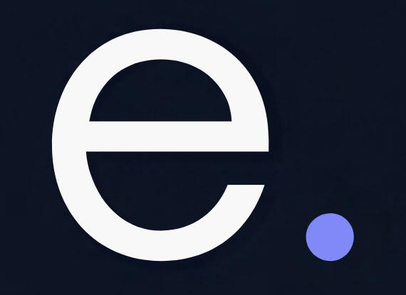

¡Gracias!
Ya lo tengo.
He recibido tu solicitud. Esto es lo que pasa ahora:
- 1Reviso lo que me has contado y cómo te llegan hoy los contactos.
- 2Te escribo por email en un día laborable, por si necesito algún dato más.
- 3En 3 días laborables tienes tu diagnóstico: dónde se pierden los contactos y qué arreglaría primero.
¿Prefieres adelantarlo? Escríbeme ahora.
Escribir por WhatsApp